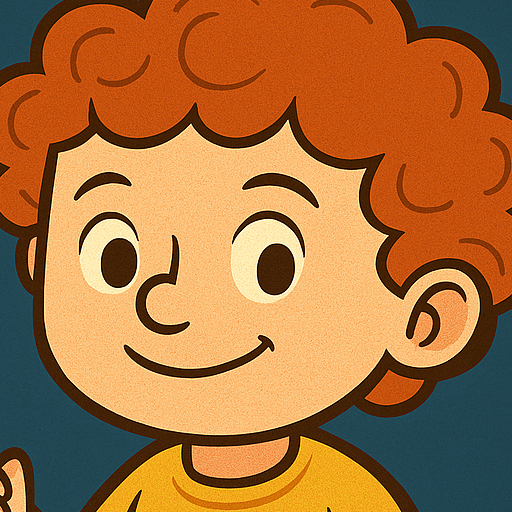

Ο Χαρισμάκης & οι Φίλοι του
📚 Μάθε με άρθρα
🖼️ Ζήσε Μέρες Πολιτισμού
💎 Για γονείς & εκπαιδευτικούς
🎮 Κουίζ 1: Χρόνος - Β'
🎮 Κουίζ 2: Α' Σύνθετο
🎮 Κουίζ 3: Ρήματα
🎮 Κουίζ 4: Υδατάνθρακες - Πρωτεΐνη
🎮 Κουίζ 5: Φρούτο ή Λαχανικό;
🎮 Κουίζ 6: Χτύπα τα φρούτα
🎙️ Μίλα με τον Χαρισμάκη